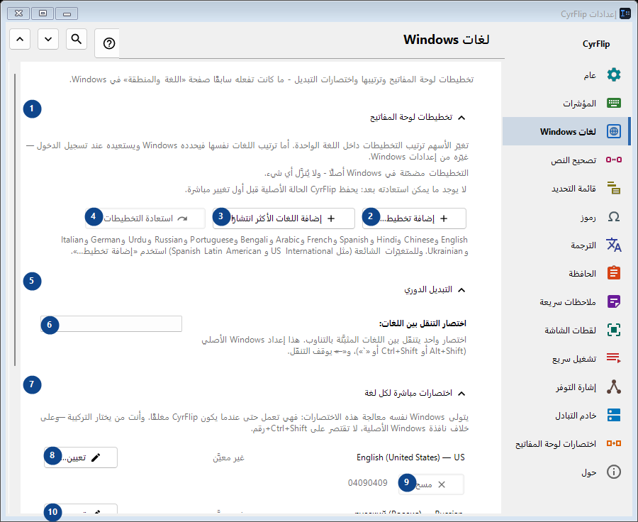
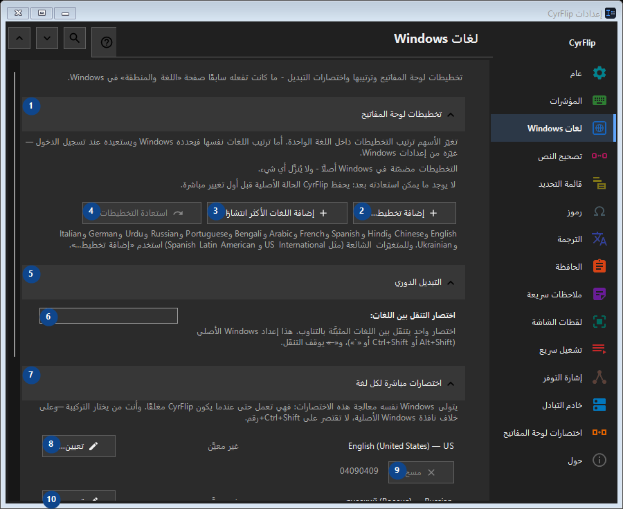

لغات Windows
الغرض
تخطيطات لوحة المفاتيح وترتيبها واختصارات التبديل - ما كانت تفعله سابقًا صفحة «اللغة والمنطقة» في Windows.


ترتيب الاستخدام
تُطبق الإعدادات فورًا. لا يوجد ترتيب إلزامي؛ استخدم المجموعات أدناه.
العناصر
1. تخطيطات لوحة المفاتيح
استخدم هذا الأمر لتنفيذ الإجراء المذكور. اقرأ أي طلب تأكيد قبل الموافقة.
اختصاراتك2. إضافة تخطيط...
استخدم هذا الأمر لتنفيذ الإجراء المذكور. اقرأ أي طلب تأكيد قبل الموافقة.
اختصاراتك3. إضافة اللغات الأكثر انتشارًا
استخدم هذا الأمر لتنفيذ الإجراء المذكور. اقرأ أي طلب تأكيد قبل الموافقة.
اختصاراتك4. استعادة التخطيطات
لا يوجد ما يمكن استعادته بعد: يحفظ CyrFlip الحالة الأصلية قبل أول تغيير مباشرة. هذا العنصر غير متاح حاليًا. فعّل الميزة أو اختر إدخالًا أولًا.
اختصاراتك5. التبديل الدوري
استخدم هذا الأمر لتنفيذ الإجراء المذكور. اقرأ أي طلب تأكيد قبل الموافقة.
اختصاراتك6. اختصار التنقل بين اللغات
اختر أو أدخل القيمة الموضحة بجانب الحقل. راجعها قبل المتابعة.
اختصاراتك7. اختصارات مباشرة لكل لغة
استخدم هذا الأمر لتنفيذ الإجراء المذكور. اقرأ أي طلب تأكيد قبل الموافقة.
اختصاراتك8. تعيين... - English (United States) - US
استخدم هذا الأمر لتنفيذ الإجراء المذكور. اقرأ أي طلب تأكيد قبل الموافقة.
اختصاراتك9. مسح - English (United States) - US
استخدم هذا الأمر لتنفيذ الإجراء المذكور. اقرأ أي طلب تأكيد قبل الموافقة. هذا العنصر غير متاح حاليًا. فعّل الميزة أو اختر إدخالًا أولًا.
اختصاراتك10. تعيين... - русский (Россия) - Russian
استخدم هذا الأمر لتنفيذ الإجراء المذكور. اقرأ أي طلب تأكيد قبل الموافقة.
اختصاراتك11. مسح - русский (Россия) - Russian
استخدم هذا الأمر لتنفيذ الإجراء المذكور. اقرأ أي طلب تأكيد قبل الموافقة. هذا العنصر غير متاح حاليًا. فعّل الميزة أو اختر إدخالًا أولًا.
اختصاراتك12. استعادة الاختصارات
لا يوجد ما يمكن استعادته بعد: يحفظ CyrFlip الحالة الأصلية قبل أول تغيير مباشرة. هذا العنصر غير متاح حاليًا. فعّل الميزة أو اختر إدخالًا أولًا.
اختصاراتك13. إعدادات Windows
استخدم هذا الأمر لتنفيذ الإجراء المذكور. اقرأ أي طلب تأكيد قبل الموافقة.
اختصاراتك14. فتح إعدادات Windows
يفتح إعدادات Windows حيث تُثبَّت لغة العرض (ترجمة Windows نفسه).
اختصاراتك